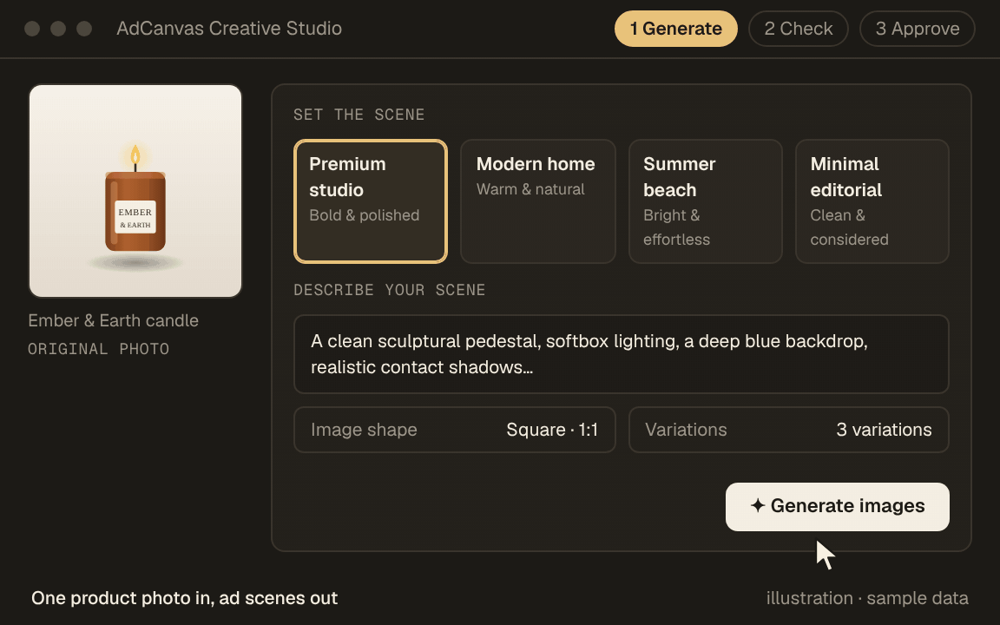

Outside work, I learn by building. When I want to understand something new, like agent loops, evals or AI safety review, I build a small product that depends on it and ship it. Apps live here; agents, which read, decide and act on their own, have their own page.

Illustrated demo with sample data: generate, check, approve
AdCanvas Creative Studio
Web app
ProblemProduct ads need fresh scenes, but AI image tools can quietly change the product itself.
SolutionGenerates ad scenes from product photos, compares each one with the original, and exports only the images a person approved.
ProblemNew mothers often feel alone and unsure of themselves.
SolutionHey Mama sends a new mother one letter a day, written by a mother who has been there. Mothers write letters for each other, and the app matches each reader with the letter closest to what she’s going through.
ProblemWomen skip events because they don’t want to walk in alone.
SolutionMatches women going to the same event in SF or NYC into small, vetted pods so nobody has to walk in alone. An AI host in the pod’s group text explains why they matched, sends the meetup plan, and checks that everyone got home. Built for the She Builds hackathon from a PRD I wrote.